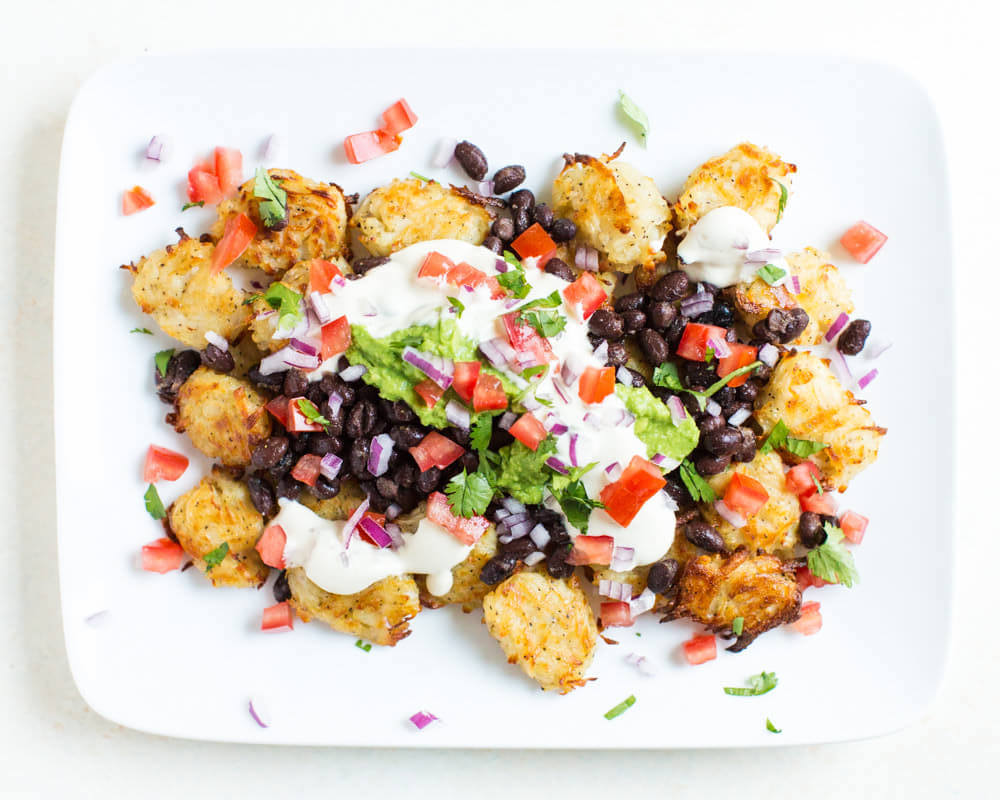

Totchos (Tator Tot Nachos) have everything you love about the classic nacho, but trade tortilla chips for tasty tator tots. These are perfect for game day or movie night. They're sure to be a crowd-pleaser!
Ingredients
Tator Tots
Black Beans
Salsa
Cumin
Garlic Powder
Salt
Beer Cheese
Sour Cream
Diced Avocado
Diced Tomato
Jalapeno (Optional)
Fresh Cilantro for Garnish
directions
Step 1: Make your favorite tator tots. If you're feeling fancy, opt for homemade. Otherwise, go with frozen. We won't judge.
Step 2: Drain and rinse beans. In a small bowl, mix them with salsa and season with cumin, garlic powder and salt to taste. Go with your gut! Cook til hot.
Step 3: Once fully cooked, place the tator tots on a plate or platter. Top with black beans, beer cheese, avocado, tomato, sour cream, and probably even more cheese.
Step 4: Sprinkle on desired amount of cilantro and if you're brave enough, some fresh chopped jalapeno.
Step 5: Eat up!